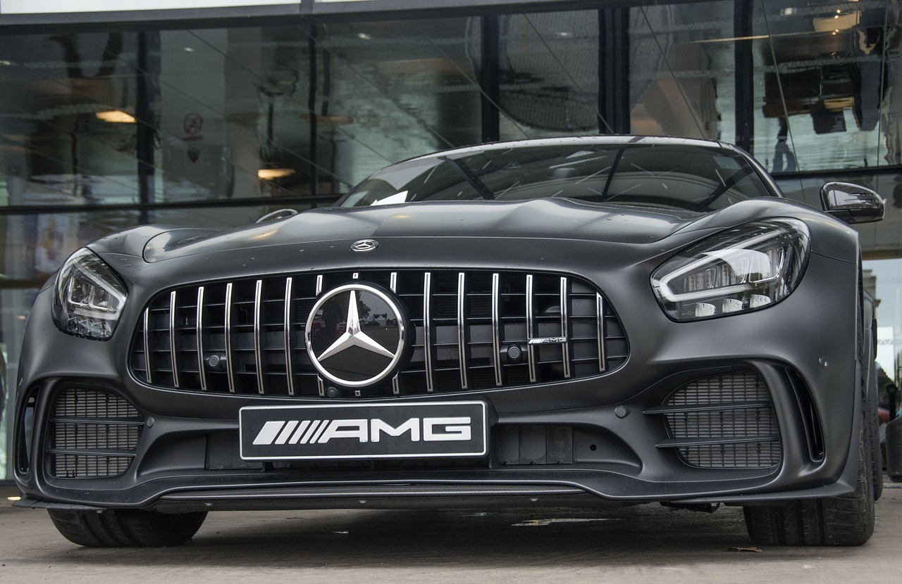

This section is all about powerful German Machines and the rivalry between German car brands

This is the Audi R8, an extremely powerful German Supercar, so powerful infact even the vastly inferior V10 version of this car is still considered a Supercar, truly an amazing car.
This is just one of the many Mercedes AMG's, from simply modding cars to working with mercedes herself, AMG has certainly rised from humble beginings, the AMG is a menace on and off the track and often brought up as a counter argument to Audi fans's R8.

This is the BMW M4, you may be wondering that this doesn't look like a supercar, no it does not, it's something greater. I think BMW is one of the only companies who have made normal family cars faster than supercars, i'd like to see Audi or Mercedes make something as beastly as this. Checkmate.

Game Over. The Porsche GT3 RS is the fastest car ever made road legal and is also the undisputed king of the track, there is no reason to even consider buying any of the other options when you could have this. that is until you look at the pricetag...